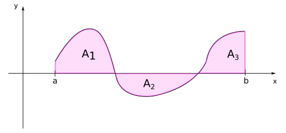

08 - Calculating accumulated change
Contents
08 - Calculating accumulated change¶
Series¶
For every sequence \(\{a_n\}\) of real numbers, it is possible to define another sequence \(\{S_n\}\) for which the elements are given by the sum of the first \(n\) terms of the sequence \(\{a_n\}\):
The sequence \(\{S_n\}\) is called a series (or an infinite series, to emphasize the sum over increasing number of terms \(\{a_n\}\)).
The same way as we asked about \(\lim a_n\), we can ask if \(\lim S_n\) exists. If it exists, or, in other words, if the sum of infinite terms \(\{a_n\}\) is equal to a finite number, we say that the series \(S_n\) is convergent.
Examples
The following expressions are example of convergent series:
Calculating areas¶
The idea of summing infinite quantities can be used to solve the problem of determining the area below a given curve. Let \(f(x)\) be a function defined on the interval \(a \le x \le b\) as:

The area below the curve of \(f(x)\) can be found dividing the interval \(a \le x \le b\) into \(n\) subintervals:
where each interval defines a rectangle of height \(f(x_i)\) and width \((x_{i+1}-x_i) = \Delta x_i = \displaystyle\frac{(b-a)}{n}\). The area below the curve will then be approximately the sum of the areas of the rectangles
As we increasethe number of intervals \(n\), while decreasing the widths of each rectangle, the sum of the areas of the rectangles gives a better approximation of the area below the curve. The exact result is given by the limit \(n \rightarrow \infty\). In this limit, the sum is represented by the following symbol:
If this limit exists, we say that the function \(f\) is integrable on the interval \(a \lt x \lt b\) and denote the limit by the definite integral \(\int_a^b f(x)dx\).
The interpretation of the integral as area can be generalized for when \(f(x)\) assumes negative values
In the case of the previous figure, we will have:
Other intuitive results related to the calculation of the area are:
Furthermore, some of the properties of the integral follows directly from the properties of limits:
Fundamental theorem of Calculus¶
The problem of calculating integrals as limits of sums requires specific methods for each function and becomes quite impractical. Fortunately, this problem can be solved with the very important result that the area problem is intrinsically related to the tangent problem.
Suppose we define a function \(F(x)\) that gives the area below the curve \(f(u)\) from \(a\) until a variable value \(x\). By definition:
If we consider a small increment \(h\) to \(x\), the new area below the curve shall be given by:
The difference between these two areas shall be approximately given by the area of the retangle with width \(h\) and height \(f(x)\):
But see that in the limit where the increment \(h\) gets very small, the approximation gets exactly equal to the increment in area, and we obtain the definition of the derivative of \(F(x)\):
This results is known as the Fundamental theorem of Calculus, and it say that the instantaneous rate of change of the area below a given curve \(f\) at a point \(x\) is given by the value of the function at that point. In other words, the area \(F(x)\) is a function that, if differentiated, gives the function \(f(x)\).
The function \(F(x)\) is then called an antiderivative of \(f(x)\). In general, there is a family of antiderivates of \(f(x)\), since \(\displaystyle\frac{d(F(x) + C)}{dx}=\displaystyle\frac{dF}{dx}=f(x)\), independent of the value of the constant \(C\). We therefore call indefinite integral:
It also directly follows that
Thus the problem of calculating the area below the curve \(f(x)\) from \(b\) to \(c\), which, by definition, is given by the infinite sum of terms \(f(x_i)\Delta x_i\) (with \(\Delta x_i \rightarrow 0\)), can be reduced to obtaining the antiderivative of \(f\), \(F(x)\), and subtracting the values of this function at points \(c\) and \(b\). The main problem then becomes how to calculate the antiderivates of a given function \(f(x)\), for which different methods can be used.
Calculating integrals¶
The simplest integrals can be calculated by inverting the differentiation of fundamental functions, as
This are obtained simply because we know that the derivative of the functions on the righ-hand sides of the equations give exactly the function that is being integrated. When the integrals are not so simple, we must apply other methods to turn them into integrals we know.
Integration by substitution¶
This method consists in finding an appropriate substitution of the variable of integration so that we end up with a simpler integral to calculate.
Examples
\(\int\frac{1}{\sqrt{x+4}}dx\)
Note that if \(u=x+4 \implies \displaystyle\frac{du}{dx}=1 \implies du=dx\). Thus, the integral can be given by:
\[\int u^{-\frac{1}{2}}du = \frac{1}{\left(-\frac{1}{2}+1\right)} \cdot u^{\frac{1}{2}} + C = 2\sqrt{x+4} + C.\]Note
Note that three mathematicians die everytime we operate with \(du\) and \(dx\) as if they were numbers on a fraction. Formally, the correct substitution on the integral would be given by a function \(u=u(x)\), so that \( \int f(u(x)) u'(x)dx = \int f(u)du\). But we can procede with the heresy above as long as we have this in mind.
\(\int xe^{(x^2-1)}dx\)
See that \(u=x^2-1 \implies \displaystyle\frac{du}{dx}=2x \implies dx=\displaystyle\frac{du}{2x}\). Then:
\[\int \frac{1}{2}e^{u}du = \frac{1}{2}e^u + C = \frac{e^{(x^2-1)}}{2} + C \]
Integration by parts¶
When integrating by parts, we have to find an appropriate association \((u=u(x), v=v(x))\), so that:
Example
\(\int x\ln x\, dx \)
Note that
\[\begin{split}\begin{align} u=\ln x \implies u' = \displaystyle\frac{1}{x} \\ v'=x \implies v=\displaystyle\frac{x^2}{2} \end{align}\end{split}\]Thus:
\[\begin{split}\begin{align}\int x\ln x\, dx &= \frac{x^2}{2}\ln x - \int \frac{x^2}{2} \cdot \frac{1}{x}dx \\ &= \frac{x^2 \ln x}{2} - \frac{1}{2}\int xdx \\ &= \frac{x^2 \ln x}{2} - \frac{1}{4}x^2 + C \\ &= \frac{1}{4} x^2 (2\ln x - 1) + C \end{align}\end{split}\]\(\int xe^x \,dx\)
Note that
\[\begin{split}\begin{align} u=x \implies u'=1 \\ v'=e^x \implies v=e^x \end{align}\end{split}\]Thus:
\[\begin{split}\begin{align}\int xe^xdx &= xe^x - \int e^x dx \hspace{0.1cm} \\ &= xe^x-e^x + C \\ &= e^x (x-1) + C \end{align}\end{split}\]
Tip
For complicated integrals, computer algebra programs like Mathematica or Sympy can be helpful. An especially user-friendly option is the website WolframAlpha.
Integration by partial fractions¶
If the integral has the form
where the degree of \(P(x)\) is smaller than the degree of \(Q(x)\), and \(Q(x)=a(x-x_1)(x-x_2)\cdots(x-x_n)\), we can write
with \(\{A_n\}\) to be determined.
Example
\(\int \frac{1}{x(x-1)}\, dx\)
First, note that \(\displaystyle\frac{1}{x(x-1)} = \displaystyle\frac{A}{x} + \displaystyle\frac{B}{(x-1)} \implies 1 = A(x-1) + Bx \implies 1 = x(A+B) - A\). By comparing the coeffients of the terms in \(x\) and the terms independent of \(x\), we obtain:
\[\begin{split}\begin{cases} A + B &= 0\\ -A &= 1 \end{cases} \implies \begin{cases} A &= -1 \\ B &= 1\end{cases}\end{split}\]Thus:
\[\frac{1}{x(x-1)} = -\frac{1}{x} + \frac{1}{x-1}\]Then we will have for the integral:
\[\begin{split}\begin{align} \int\frac{1}{x(x-1)}dx &= \int\left(-\frac{1}{x}+\frac{1}{x-1}\right)dx \\ &= -\int \frac{1}{x}dx + \int\frac{1}{x-1}dx \\ &= - \ln|x| + \ln|x-1| + C \\ &= \ln \left|\frac{x-1}{x}\right| + C\end{align}\end{split}\]